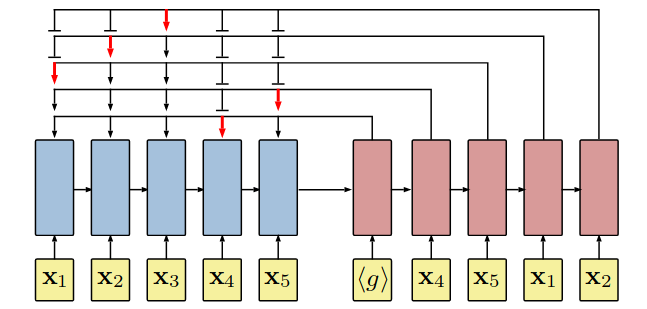

Utilizing neural networks and reinforcement learning to tackle the Traveling Salesman Problem, where the neural network model is a Recurrent Neural Network (RNN), and the policy for reinforcement learning employs policy gradients.
Reference: * Neural Combinatorial Optimization with Reinforcement Learning * code
On the 2D Euclidean TSP, given an input graph, represented as a sequence of n cities in a two dimensional space s = {xi}i = 1n where each xi ∈ ℝ2, we are concerned with finding a permutation of the points π, termed a tour, that visits each city once and has the minimum total length. We define the length of a tour defined by a permutation π as $$\begin{align} L(\pi \mid s)=\left\|\mathbf{x}_{\pi(n)}-\mathbf{x}_{\pi(1)}\right\|_2+\sum_{i=1}^{n-1}\left\|\mathbf{x}_{\pi(i)}-\mathbf{x}_{\pi(i+1)}\right\|_2, \end{align}$$ where ∥ ⋅ ∥2 denotes ℓ2 norm. The aim
Neural network architecture uses the chain relue to factorize the probability of a tour as: $$\begin{align} p(\pi \mid s)=\prod_{i=1}^n p(\pi(i) \mid \pi(<i), s) \end{align}$$ where p(π ∣ s) is stochastic policy, and then uses individual softmax modules to represent each term
The architecture is pointer network. 
Propose to use model-free policy-based Reinforcement Learning to optimize the parameters of a pointer network denoted θ. Our training objective is the expected tour length which, given an input graph s, is defined as
$$\begin{align} J(\boldsymbol{\theta} \mid s)&=\mathbb{E}_{\pi \sim p_\theta(. \mid s)} L(\pi \mid s) \\ \nabla_\theta J(\theta \mid s)&=\mathbb{E}_{\pi \sim p_\theta(. \mid s)}\left[(L(\pi \mid s)-b(s)) \nabla_\theta \log p_\theta(\pi \mid s)\right]\\ \nabla_\theta J(\theta) &\approx \frac{1}{B} \sum_{i=1}^B\left(L\left(\pi_i \mid s_i\right)-b\left(s_i\right)\right) \nabla_\theta \log p_\theta\left(\pi_i \mid s_i\right) \end{align}$$ where b(s) denotes a baseline function that does not depend on π and estimates the expected tour length to reduce the variance of the gradients.
From the above discussion, it is clear that b(s)， which provides a method to measure path length, is crucial for achieving an optimal network. The network will deliver an exact policy if b(s) offers a precise value.
We introduce an auxiliary network, called a critic and parameterized by θv, to learn the expected tour length found by our current policy pθ given an input sequence s.
$$\begin{align} \mathcal{L}\left(\theta_v\right)=\frac{1}{B} \sum_{i=1}^B\left\|b_{\theta_v}\left(s_i\right)-L\left(\pi_i \mid s_i\right)\right\|_2^2 \end{align}$$
I believe b(s) is more than just an auxiliary network. As crucial as an engine in chess, b(s) provides a criterion for key optimization problems, which can be seamlessly integrated into search algorithms. However, to utilize it effectively for the TSP, we need to devise a functional approach to incorporate actions into s.